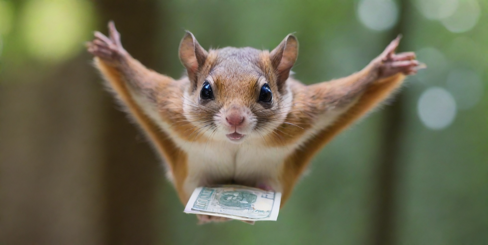
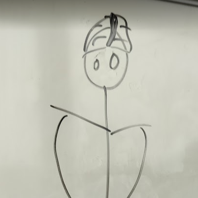
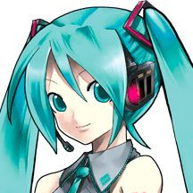

Les Écureuils Volants rémunérés ? Les associations de protection des animaux font entendre leur voix

Une nouvelle proposition audacieuse a émergé dans le monde du Wing-suit, mettant en lumière une perspective inattendue : les associations de protection des animaux manifestent le désir de voir les écureuils volants, qui inspirent la conception des ailes volantes, être rémunérés pour leur contribution involontaire au développement de ce sport aérien extrême.
Alors que le Wing-suit continue de gagner en popularité, de nombreux athlètes s'inspirent du vol plané gracieux des écureuils volants pour perfectionner leurs techniques. Ces petits mammifères, également connus sous le nom de colugos, sont réputés pour leur capacité à glisser d'arbre en arbre sur de grandes distances grâce à une membrane appelée patagium, qui s'étend entre leurs membres.
Des défenseurs des droits des animaux soutiennent désormais que l'utilisation de cette inspiration naturelle dans la conception des ailes de Wing-suit devrait être accompagnée d'une forme de compensation pour les écureuils volants. Plusieurs associations, telles que "Les Amis des Animaux Aériens" et "Protecteurs du Patagium", plaident en faveur d'une rémunération symbolique pour ces animaux remarquables.
Dans une déclaration commune, ces associations ont souligné l'importance de reconnaître la contribution des écureuils volants à la culture du Wing-suit. "Ces créatures magnifiques ont involontairement servi de muse pour les passionnés de sports aériens. Il est temps que nous reconsidérions la manière dont nous tirons parti de leur talent naturel. Une rémunération symbolique pourrait contribuer à sensibiliser à la préservation de leur habitat et à soutenir des initiatives de conservation essentielles", ont-elles déclaré.
Certains experts en biologie ont exprimé leur soutien à cette initiative, soulignant que la reconnaissance et la préservation des habitats naturels des écureuils volants sont cruciales pour garantir leur survie à long terme.
Du côté des communautés de Wing-suit, les réactions sont diverses. Certains athlètes reconnaissent l'importance de la nature dans l'évolution de leurs sports, tandis que d'autres s'inquiètent des implications pratiques et financières de la rémunération des écureuils volants.
La proposition soulève des questions intrigantes sur la coexistence entre l'inspiration puisée dans la nature et la responsabilité envers les créatures qui en sont la source. Alors que le débat continue de prendre de l'ampleur, il reste à voir si la proposition des associations sera un jour retenue, ou si d'autres solutions créatives émergeront pour résoudre cette question éthique unique.
Commentaires

Rongeur556 Il y a 1 jour Absolument! Tous les bénéfices fait viennent du vol de l'idée de la nature... Les Winsuits sont des PLAGIATS de notre cher mère nature.
hommesaintmentalement Il y a 23 heures C'est des animaux ????? On ne peux pas débattre du fait de leur donner de l'argent ??? encore, payer des assos pour leur défense oui, mais vous souhaitez juste leur donner des billets ???? ça va pas ??????

yiuzegbf25 Il y a 59 minutes Cela aurait du être fait bien plus tot.
Visiteur